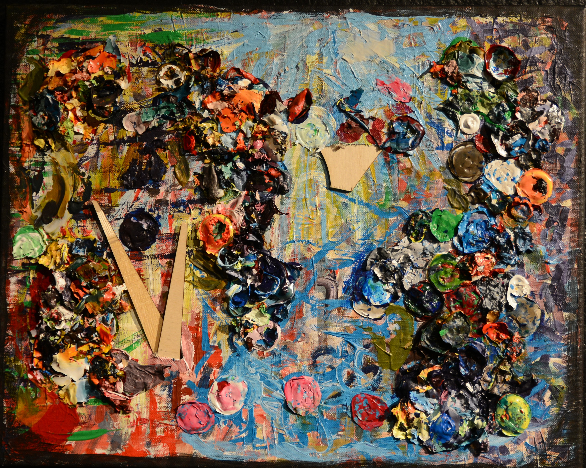

In The Black Gallery At San Jose State
Glitch Painting, Mix Media, Acrylic paint blobs and wood stuck through, on canvas.
---Next page--->

This is a painting done with globs of acrylic paint. There was some rips in the canvas, so I stuck bits of wood though them.
Do you want to see The Octopot? ---Next page--->
To Go Back to trash can painting press here